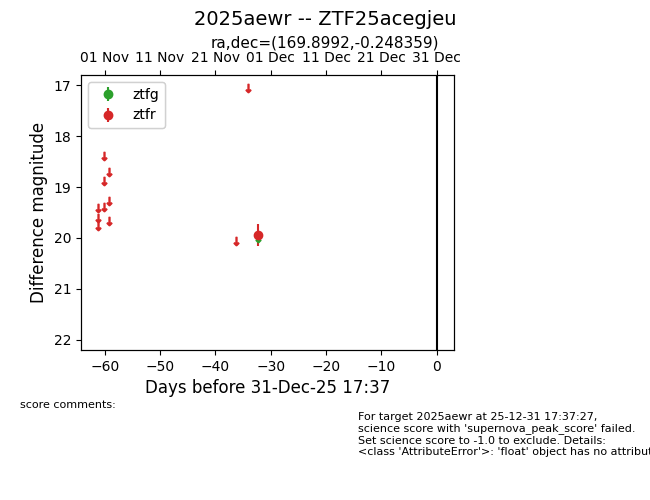
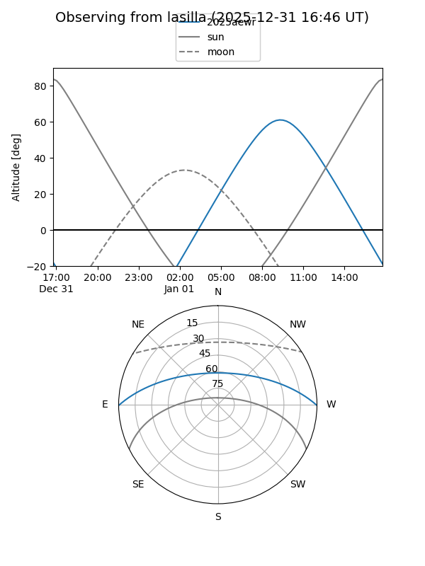
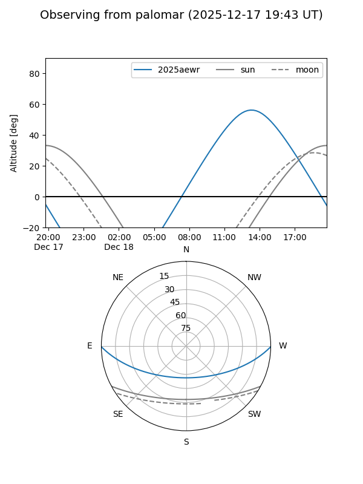

2025aewr
Target 2025aewr at 2025-12-18 11:17
Aliases and brokers:
FINK: fink-portal.org/ZTF25acegjeu
Lasair: lasair-ztf.lsst.ac.uk/objects/ZTF25acegjeu
ALeRCE: alerce.online/object/ZTF25acegjeu
TNS: wis-tns.org/object/2025aewr
YSE: ziggy.ucolick.org/yse/transient_detail/2025aewr
alt names
ZTF25acegjeu (ztf,fink_ztf)
2025aewr (tns,yse)
Coordinates:
equatorial (ra, dec) = 169.8992,-0.24836
equatorial (HMS+DMS) = 11:19:35.81,-00:14:54.09
galactic (l, b) = (260.2979,+54.83482)
Photometry
last ztfr=19.94
1 ztfr detections
Lightcurve

Visibility


Additional plots